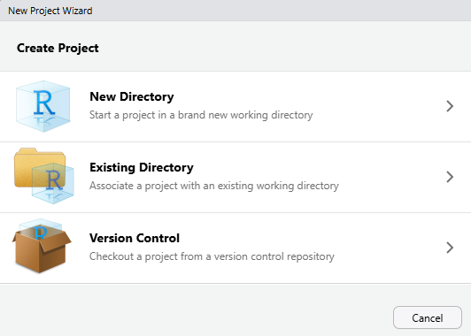
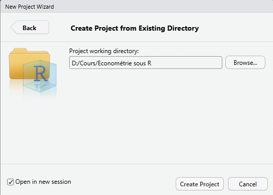

# Sans définir de répetoire de travail
# Ce chemin d'accès est personnel et doit être changé à chaque changement d'ordinateur
readr::read_csv("D:/cours/Econométrie sous R/01-raw-data/iris.csv") |>
head()Organiser un projet avec R
Organiser un projet avec R
Les chemins d’accès
Un projet économétrique doit être reproductible avec le moins d’intervention humaine possible. Dans l’idéal, la personne souhaitant reproduire l’analyse doit simplement avoir à exécuter le code. Moins il y a d’interventions à faire, mieux c’est. Cela évite les erreurs et permet de s’assurer un maximum qu’il n’y a pas eu de fraude lors de l’analyse.
Un point qui pose souvent problème lorsque l’on donne un code à un personne est la gestion des “chemins” dit “paths”. Ces chemins prennent la forme de chaînes de caractères du type “D:/cours/Econométrie sous R”. Ces chemins diffèrent selon l’opérateur système utilisé (Windows, MAC OS, Linux) et selon les personnes puisque l’organisation interne d’un ordinateur est personnel.
Il existe deux manières générales d’écrire les chemins d’accès : absolues et relatives. La manière absolue consiste à écrire le chemin d’accès complet. La manière relative consiste à uniquement écrire le chemin d’accès à partir d’une certaine source.
Généralement pour éviter d’avoir à changer tous les chemins d’accès d’un fichier, on définit un répertoire de travail à partir duquel on va pouvoir écrire les chemins d’accès en relatif.
# En définissant un répetoire de travail
# Il suffit maintenant de juste modifier ce chemin d'accès par utilisateur
setwd("D:/cours/Econométrie sous R") #ne fonctionne pas à cause du projet R : on ne change pas de répertoire de travail# On peut écrire le chemin d'accès de manière relative à ce répertoire de tavail
# Ces chemins d'accès n'auront pas besoin d'être modifiés si l'organisation interne du dossier n'est pas modifiée
readr::read_csv("01-raw-data/iris.csv") |>
head()Cette manière de définir un répertoire de travail via la fonction setwd() est un premier pas dans la reproductibilité mais n’est pas optimale puisque chaque utilisateur doit changer ce répertoire de travail à sa convenance.
Pour pallier ce problème (entre autre), on va utiliser les “Projets R”. Créer un “Projet R” va permettre entre autre chose de disposer d’une session R propre à chaque projet que l’on a et va automatiquement définir le répertoire de travail au niveau de ce projet. Un “Projet R” prend la forme d’un fichier .Rproj que l’on va créer au niveau le plus élevé de notre dossier contenant notre projet.
On peut créer un projet de manière “manuelle” de la façon suivante :



Ou bien en utilisant la commande usethis::create_project("D:/cours/Econometrie sous R").
Une fois le “Projet R” créé, il suffit de lancer la session à partir du fichier .Rproj.
A partir de là, une manière très simple de créer ses chemins d’accès est d’utiliser la fonction here du package here. Cette fonction utilisée sans arguments supplémentaires va renvoyer une chaîne de caractère indiquant le chemin d’accès absolu jusqu’au répertoire de travail :
here::here()[1] "C:/Users/romai/OneDrive/Documents/cours-Econometrie-sous-R"Chaque argument passé à cette fonction est une chaîne de caractère qui correspond à un sous-dossier ou un fichier. La fonction here va créer le chemin absolu jusqu’à ce sous-dossier ou ce fichier.
here::here("01-raw-data")[1] "C:/Users/romai/OneDrive/Documents/cours-Econometrie-sous-R/01-raw-data"# Importer le dataframe iris avec la fonction here
readr::read_csv(
here::here("01-raw-data", "iris.csv"),
show_col_types = FALSE
) |>
head()# A tibble: 6 × 5
Sepal.Length Sepal.Width Petal.Length Petal.Width Species
<dbl> <dbl> <dbl> <dbl> <chr>
1 5.1 3.5 1.4 0.2 setosa
2 4.9 3 1.4 0.2 setosa
3 4.7 3.2 1.3 0.2 setosa
4 4.6 3.1 1.5 0.2 setosa
5 5 3.6 1.4 0.2 setosa
6 5.4 3.9 1.7 0.4 setosa L’utilisation d’un “Projet R” et de la fonction here permet d’éviter tout changement manuel de chemin d’accès et est un moyen (nécessaire mais pas suffisant) d’assurer un maximum de reproductibilité.
Structure du dossier
Afin de gagner du temps, de la productivité et de permettre une relecture facilitée du projet, il est essentiel d’avoir une organisation rigoureuse et propre de son dossier de travail. Chacun dispose de sa manière de travailler et d’organiser les choses. La manière présentée ici n’est peut-être pas celle qui est optimale et va correspondre à tout le monde.
Ma structure de base (qui évolue selon les projets et les besoins) est de la forme suivante :
00-...: Dossier quelconque, généralement des notes sur le projet en cours01-raw-data: Dossier dans lequel sont conservées les données brutes. Aucune modification ne doit être effectuée sur ces données.02-codes: Dossier contenant les scripts principaux de l’analyse ainsi que des sous-dossiers utilitaires (voir plus loin).03-processed-data: Dossier contenant les données modifiées et enregistrées.04-output: Dossier contenant les résultats (souvent des graphiques et des tables) enregistrés.graphs: Sous-dossier contenant les graphiques.tables: Sous-dossier contenant les tables LaTeX.Robjects: Sous-dossier contenant les objets R (les estimations généralement).
05-text: Dossier contenant les fichier permettant d’écrire le rendu final / les rendus finaux (par soucis de reproductibilité immédiate je recommande d’écrire l’article en local et non pas sous Overleaf, ou au moins d’avoir une copie en local).- 1 sous dossier par rendu
Projet.Rproj: le fichierRprojpermettant de créer le projet RREADME: Un fichier (Markdown, Word, txt…) qui explique comment exécuter l’analyse et obtenir les résultats présentés dans l’article. Il est important de bien indiquer les packages utilisés, les configurations requises et tout élément nécessaire à la reproduction de l’analyse.
D’autres fichiers et dossiers peuvent être présent à ce niveau suivant les besoins spécifiques d’une personne ou d’un projet.
Git et Github
Un moyen de transmettre son projet ainsi que de garder un oeuil sur son évolution sans avoir à faire des dizaines de “fichier-final-V2-final” est d’utiliser Git et Github. Voir Happy Git and GitHub for the useR pour l’installation et le fonctionnement de base.
Renv
Un des problème majeur de la reproductibilité est de s’assurer que toutes les fonctions utilisées soient pérennes dans le temps. Or R gère assez mal l’évolution dans le temps des packages. Il est possible que les fonctions utilisées changent ou ne soient plus disponibles une fois passé un certain temps. Le plus robuste est d’utiliser uniquement les fonction de base de R qui sont les moins susceptibles de changer. Cependant, cela implique de devoir tout recréer manuellement.
Si l’on utilise des packages, il convient dans un premier temps de noter tous les packages utilisés et leur version ainsi que la version de R utilisée.
Il est également possible d’utiliser le package renv qui permet de télécharger les packages en local et ainsi de les garder disponible dans leur version actuelle pour le futur et les autres utilisateurs. renv va permettre aux autre utilisateurs de télécharger les packages dans la même version que celle utilisée par l’auteur du projet de base.
ATTENTION ! Pour les utilisateurs de Windows, pour pouvoir utiliser correctement renv vous devez d’abord télécharger Rtools.
Voici une introduction au fonctionnement de Renv.
Organisation du code
Organiser son code pour le rendre lisible, compréhensible et facile à exécuter est également extrêmement important.
R est un programme que l’on va faire fonctionner ligne par ligne le plus souvent. Mis à part pour la reproductibilité, on va assez rarement exécuter tout le code d’un seul bloc. On va plutôt faire une estimation, regarder les résultats, changer quelque chose dans les données, refaire une estimation etc…
A cause de ce fonctionnement, il est assez facile d’obtenir un code brouillon dans lequel on doit se balader pour exécuter des bouts de code par-ci par-là.
Pour éviter cela je recommande de ne pas raisonner de manière linéaire dans le script mais plutôt de raisonner d’une manière plus “opérationnelle”.
# Un raisonnement linéaire sur une modélisation ARMA :
# 1) Importer les packages
# 2) Importer les données
# 3) Tester la stationnarité
# 4) Différencier les données non stationnaires
# 5) Retester la stationnarité
# 6) Modéliser la série par un ARMA
# 7) Etudier les résultats
# 8) Sortir les graphs et tablesLors de l’écriture initiale, cela ne pose pas de problème. Mais lorsque l’on revient plus tard et que l’on souhaite uniquement revoir les tables et les graphs, on doit exécuter la ligne 1, 2, 4, 6 et 8. Sur un petit code cela n’est pas gênant de sauter des lignes (même si à la longue quand on fait des tests ça devient usant) mais sur des projets où les codes font parfois des milliers de lignes avec de dizaines d’éléments différents, cela devient vite un calvaire de savoir ce que l’on veut exécuter ou pas.
La manière dont je procède est de créer des scripts avec des buts bien définis plutôt que des scripts généraux. Ainsi dans mon dossier 02-codes, je vais avoir un fichier create-data.R dans lequel je vais avoir le script dans lequel je crée toutes les données (avec les données différenciées etc…), un fichier estimations.R dans lequel je vais procéder à l’estimation et l’enregistrement des résultats (enregistrer les objets R dans un dossier particulier) et un fichier analyse.R dans lequel je vais mener l’analyse sur les estimations, faire les tables, les graphs, l’analyse de données etc…
Cela implique de faire des allers-retours entre les différents scripts mais permet une relecture et une re-exécution plus facile et compréhensible.
La deuxième chose que je recommande est d’éviter au sein d’un script d’avoir des blocs de code spécifiques à exécuter avant d’exécuter ce que je veux. Pour cela, j’organise de manière rigoureuse mon script afin que ce que j’ai à exécuter impérativement ensemble se trouve dans la même section/sous-section sans aucune ambiguïté.
Enfin, la première ligne de mon script est toujours une exécution d’un “setup” c’est à dire d’un code qui va me charger tout ce dont j’ai besoin peu importe le script dans lequel je suis : packages, données, chemins d’accès, objets R, preset de graphiques, fonctions, etc… grâce à la fonction source("path-to-setup.R") qui permet d’exécuter un script R.
Mon dossier Code ressemble donc à :
02-codescreate-data.R: Code R dans lequel je crée toutes les données des plus basiques aux plus avancéesestimation.R: Code R dans lequel je fais toutes les estimations à faire dans l’étudeanalyse.R: Code R dans lequel je procède à l’analyse et à l’enregistrement des résultatsfunctions_R: Dossier dans lequel chaque fonction R créée et utilisée va être enregistrée dans un fichier.Rspécifique portant le même nom que la fonction.utils: Dossier dans lequel vont se trouver tous les scripts utilitaires qui vont être appelés au début de chaque script principal.setup.R: Code R qui va être exécuté au début de chaque script principal et qui va importer et charger tous les éléments contenus dans les autres scripts utilitaires. Il contient également les packages à charger, les conflits de fonction, la création des dossiers, les styles de graphiques etc…paths.R: Code R qui contient des chemins d’accès enregistrés dans des variables afin de ne pas avoir à toujours les renseigner. Tous les paths sont créés avec la fonctionhere().import-processed-data.R: Code R qui va importer les données “processed” utilisées dans l’analyse si elles sont déjà créées (conditions nécessaire à mettre lorsque l’on passe le code à une autre personne qui n’aura pas ces données déjà créées)..R: Code R qui contient ce qui doit être chargé de spécifique au projet.